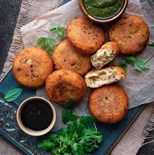
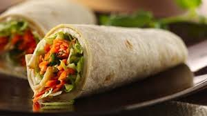
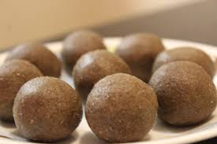
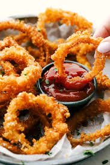

Crispy nachos

Crispy Nachos recipe
Ingredients
- Rice flour
- Onion
- Maida
- Cumin seeds
- Garlic
- Turmeric powder
- Chaat masala
- Chilli powder
- Water
- oil
- Salt
Method to cook
- To a mixer jar, add cumin seeds,onion and garlic.Grind into fine paste.
- In a pan pour water and let it boil.
- Add salt,oil,paste,maida,rice flour,turmeric powder and mix it.
- Close with lid and cook it for 5 minutes.
- Transfer dough into bowl and kneed it well.
- Sprinkle some maida to the surface and place the dough .
- Flatten the dough and makes holes on it.
- Cut into triangle shape pieces.
- Take a pan and pour some oil.Heat it up.
- Add the nachos and fry it on both sides crispy.
- For masala topping, Mix chaat masala and chilli powder together.
- Mix masala with nachos.
- Crispy nachos is ready!
Back to Home
other recipes



